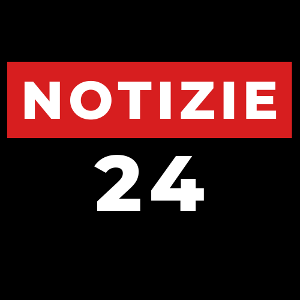

<div class="bg-black w-full">
	<mat-toolbar class="p-0 m-0 shadow-lg">
	  <div class="w-full flex items-center justify-between px-4 py-2" style="margin-left: 250px; margin-right: 250px;">
		
		<div class="flex items-center space-x-2 text-white">
		  <button mat-icon-button (click)="toggle()">
			<mat-icon>menu</mat-icon>
		  </button>
		  
		</div>
  
		
		<div class="hidden lg:flex space-x-4">
		  <a routerLink="/news" class="menu-item active-link hover:text-red-500 text-white font-medium uppercase tracking-wide">News</a>
		  <a routerLink="/economia" class="menu-item hover:text-red-500 text-white font-medium uppercase tracking-wide">Economia</a>
		  <a routerLink="/politica" class="menu-item hover:text-red-500 text-white font-medium uppercase tracking-wide">Politica</a>
		  <a routerLink="/sport" class="menu-item hover:text-red-500 text-white font-medium uppercase tracking-wide">Sport</a>
		  <a routerLink="/intrattenimento" class="menu-item hover:text-red-500 text-white font-medium uppercase tracking-wide">Intrattenimento</a>
		  <a routerLink="/scienza" class="menu-item hover:text-red-500 text-white font-medium uppercase tracking-wide">Scienza</a>
		  <a routerLink="/cultura" class="menu-item hover:text-red-500 text-white font-medium uppercase tracking-wide">Cultura</a>
		  <a routerLink="/salute" class="menu-item hover:text-red-500 text-white font-medium uppercase tracking-wide">Salute</a>
		</div>
  
		
		<div class="hidden lg:flex items-center space-x-2 text-white">
		  <div class="flex flex-col items-start">
			<p class="font-medium">Firenze</p>
			<p class="text-xs text-gray-400">Soleggiato, 18°C</p> 
		  </div>
		  <mat-icon class="text-2xl text-gray-400" >wb_sunny</mat-icon>
		</div>
  
		
		<div class="hidden lg:flex items-center space-x-2">
		  <button mat-button class="bg-red-600 text-white px-3 py-1 rounded-full hover:bg-red-700 shadow-md font-medium">
			Accedi
		  </button>
		</div>
	  </div>
	</mat-toolbar>
  </div>
  